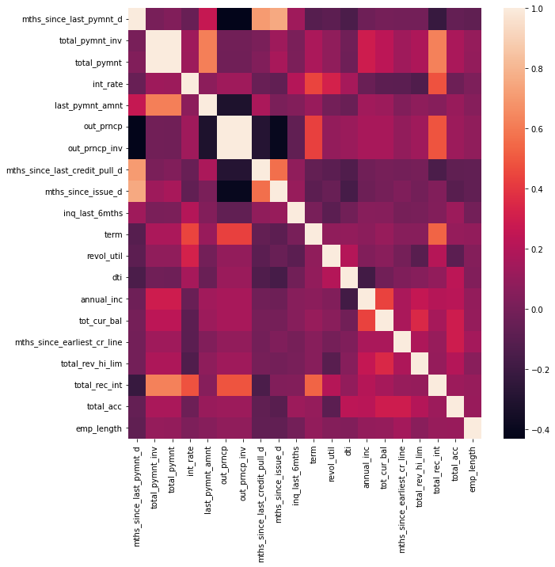
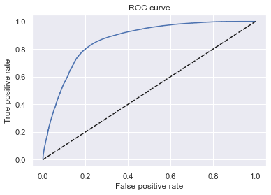
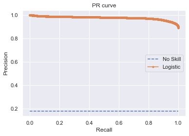

pd.set_option("display.max_columns", None)core
Fill in a module description here
loan_data = pd.read_csv("../data/loan_data_2007_2014.csv", low_memory=False)loan_data| id | member_id | loan_amnt | funded_amnt | funded_amnt_inv | term | int_rate | installment | grade | sub_grade | emp_title | emp_length | home_ownership | annual_inc | verification_status | issue_d | loan_status | pymnt_plan | url | desc | purpose | title | zip_code | addr_state | dti | delinq_2yrs | earliest_cr_line | inq_last_6mths | mths_since_last_delinq | mths_since_last_record | open_acc | pub_rec | revol_bal | revol_util | total_acc | initial_list_status | out_prncp | out_prncp_inv | total_pymnt | total_pymnt_inv | total_rec_prncp | total_rec_int | total_rec_late_fee | recoveries | collection_recovery_fee | last_pymnt_d | last_pymnt_amnt | next_pymnt_d | last_credit_pull_d | collections_12_mths_ex_med | mths_since_last_major_derog | policy_code | application_type | annual_inc_joint | dti_joint | verification_status_joint | acc_now_delinq | tot_coll_amt | tot_cur_bal | open_acc_6m | open_il_6m | open_il_12m | open_il_24m | mths_since_rcnt_il | total_bal_il | il_util | open_rv_12m | open_rv_24m | max_bal_bc | all_util | total_rev_hi_lim | inq_fi | total_cu_tl | inq_last_12m | |
|---|---|---|---|---|---|---|---|---|---|---|---|---|---|---|---|---|---|---|---|---|---|---|---|---|---|---|---|---|---|---|---|---|---|---|---|---|---|---|---|---|---|---|---|---|---|---|---|---|---|---|---|---|---|---|---|---|---|---|---|---|---|---|---|---|---|---|---|---|---|---|---|---|---|---|
| 0 | 1077501 | 1296599 | 5000 | 5000 | 4975.0 | 36 months | 10.65 | 162.87 | B | B2 | NaN | 10+ years | RENT | 24000.0 | Verified | Dec-11 | Fully Paid | n | https://www.lendingclub.com/browse/loanDetail.... | Borrower added on 12/22/11 > I need to upgra... | credit_card | Computer | 860xx | AZ | 27.65 | 0.0 | Jan-85 | 1.0 | NaN | NaN | 3.0 | 0.0 | 13648 | 83.7 | 9.0 | f | 0.00 | 0.00 | 5861.071414 | 5831.78 | 5000.00 | 861.07 | 0.00 | 0.00 | 0.00 | Jan-15 | 171.62 | NaN | Jan-16 | 0.0 | NaN | 1 | INDIVIDUAL | NaN | NaN | NaN | 0.0 | NaN | NaN | NaN | NaN | NaN | NaN | NaN | NaN | NaN | NaN | NaN | NaN | NaN | NaN | NaN | NaN | NaN |
| 1 | 1077430 | 1314167 | 2500 | 2500 | 2500.0 | 60 months | 15.27 | 59.83 | C | C4 | Ryder | < 1 year | RENT | 30000.0 | Source Verified | Dec-11 | Charged Off | n | https://www.lendingclub.com/browse/loanDetail.... | Borrower added on 12/22/11 > I plan to use t... | car | bike | 309xx | GA | 1.00 | 0.0 | Apr-99 | 5.0 | NaN | NaN | 3.0 | 0.0 | 1687 | 9.4 | 4.0 | f | 0.00 | 0.00 | 1008.710000 | 1008.71 | 456.46 | 435.17 | 0.00 | 117.08 | 1.11 | Apr-13 | 119.66 | NaN | Sep-13 | 0.0 | NaN | 1 | INDIVIDUAL | NaN | NaN | NaN | 0.0 | NaN | NaN | NaN | NaN | NaN | NaN | NaN | NaN | NaN | NaN | NaN | NaN | NaN | NaN | NaN | NaN | NaN |
| 2 | 1077175 | 1313524 | 2400 | 2400 | 2400.0 | 36 months | 15.96 | 84.33 | C | C5 | NaN | 10+ years | RENT | 12252.0 | Not Verified | Dec-11 | Fully Paid | n | https://www.lendingclub.com/browse/loanDetail.... | NaN | small_business | real estate business | 606xx | IL | 8.72 | 0.0 | Nov-01 | 2.0 | NaN | NaN | 2.0 | 0.0 | 2956 | 98.5 | 10.0 | f | 0.00 | 0.00 | 3003.653644 | 3003.65 | 2400.00 | 603.65 | 0.00 | 0.00 | 0.00 | Jun-14 | 649.91 | NaN | Jan-16 | 0.0 | NaN | 1 | INDIVIDUAL | NaN | NaN | NaN | 0.0 | NaN | NaN | NaN | NaN | NaN | NaN | NaN | NaN | NaN | NaN | NaN | NaN | NaN | NaN | NaN | NaN | NaN |
| 3 | 1076863 | 1277178 | 10000 | 10000 | 10000.0 | 36 months | 13.49 | 339.31 | C | C1 | AIR RESOURCES BOARD | 10+ years | RENT | 49200.0 | Source Verified | Dec-11 | Fully Paid | n | https://www.lendingclub.com/browse/loanDetail.... | Borrower added on 12/21/11 > to pay for prop... | other | personel | 917xx | CA | 20.00 | 0.0 | Feb-96 | 1.0 | 35.0 | NaN | 10.0 | 0.0 | 5598 | 21.0 | 37.0 | f | 0.00 | 0.00 | 12226.302210 | 12226.30 | 10000.00 | 2209.33 | 16.97 | 0.00 | 0.00 | Jan-15 | 357.48 | NaN | Jan-15 | 0.0 | NaN | 1 | INDIVIDUAL | NaN | NaN | NaN | 0.0 | NaN | NaN | NaN | NaN | NaN | NaN | NaN | NaN | NaN | NaN | NaN | NaN | NaN | NaN | NaN | NaN | NaN |
| 4 | 1075358 | 1311748 | 3000 | 3000 | 3000.0 | 60 months | 12.69 | 67.79 | B | B5 | University Medical Group | 1 year | RENT | 80000.0 | Source Verified | Dec-11 | Current | n | https://www.lendingclub.com/browse/loanDetail.... | Borrower added on 12/21/11 > I plan on combi... | other | Personal | 972xx | OR | 17.94 | 0.0 | Jan-96 | 0.0 | 38.0 | NaN | 15.0 | 0.0 | 27783 | 53.9 | 38.0 | f | 766.90 | 766.90 | 3242.170000 | 3242.17 | 2233.10 | 1009.07 | 0.00 | 0.00 | 0.00 | Jan-16 | 67.79 | Feb-16 | Jan-16 | 0.0 | NaN | 1 | INDIVIDUAL | NaN | NaN | NaN | 0.0 | NaN | NaN | NaN | NaN | NaN | NaN | NaN | NaN | NaN | NaN | NaN | NaN | NaN | NaN | NaN | NaN | NaN |
| ... | ... | ... | ... | ... | ... | ... | ... | ... | ... | ... | ... | ... | ... | ... | ... | ... | ... | ... | ... | ... | ... | ... | ... | ... | ... | ... | ... | ... | ... | ... | ... | ... | ... | ... | ... | ... | ... | ... | ... | ... | ... | ... | ... | ... | ... | ... | ... | ... | ... | ... | ... | ... | ... | ... | ... | ... | ... | ... | ... | ... | ... | ... | ... | ... | ... | ... | ... | ... | ... | ... | ... | ... | ... | ... |
| 466280 | 8598660 | 1440975 | 18400 | 18400 | 18400.0 | 60 months | 14.47 | 432.64 | C | C2 | Financial Advisor | 4 years | MORTGAGE | 110000.0 | Source Verified | Jan-14 | Current | n | https://www.lendingclub.com/browse/loanDetail.... | NaN | debt_consolidation | Debt consolidation | 773xx | TX | 19.85 | 0.0 | Apr-03 | 2.0 | NaN | NaN | 18.0 | 0.0 | 23208 | 77.6 | 36.0 | w | 12574.00 | 12574.00 | 10383.360000 | 10383.36 | 5826.00 | 4557.36 | 0.00 | 0.00 | 0.00 | Jan-16 | 432.64 | Feb-16 | Jan-16 | 0.0 | NaN | 1 | INDIVIDUAL | NaN | NaN | NaN | 0.0 | 0.0 | 294998.0 | NaN | NaN | NaN | NaN | NaN | NaN | NaN | NaN | NaN | NaN | NaN | 29900.0 | NaN | NaN | NaN |
| 466281 | 9684700 | 11536848 | 22000 | 22000 | 22000.0 | 60 months | 19.97 | 582.50 | D | D5 | Chief of Interpretation (Park Ranger) | 10+ years | MORTGAGE | 78000.0 | Verified | Jan-14 | Charged Off | n | https://www.lendingclub.com/browse/loanDetail.... | NaN | debt_consolidation | Debt consolidation | 377xx | TN | 18.45 | 0.0 | Jun-97 | 5.0 | NaN | 116.0 | 18.0 | 1.0 | 18238 | 46.3 | 30.0 | f | 0.00 | 0.00 | 4677.920000 | 4677.92 | 1837.04 | 2840.88 | 0.00 | 0.00 | 0.00 | Dec-14 | 17.50 | NaN | Jan-16 | 0.0 | NaN | 1 | INDIVIDUAL | NaN | NaN | NaN | 0.0 | 0.0 | 221830.0 | NaN | NaN | NaN | NaN | NaN | NaN | NaN | NaN | NaN | NaN | NaN | 39400.0 | NaN | NaN | NaN |
| 466282 | 9584776 | 11436914 | 20700 | 20700 | 20700.0 | 60 months | 16.99 | 514.34 | D | D1 | patrol | 7 years | MORTGAGE | 46000.0 | Verified | Jan-14 | Current | n | https://www.lendingclub.com/browse/loanDetail.... | Borrower added on 12/06/13 > I am going to c... | debt_consolidation | Debt consolidation | 458xx | OH | 25.65 | 0.0 | Dec-01 | 2.0 | 65.0 | NaN | 18.0 | 0.0 | 6688 | 51.1 | 43.0 | f | 14428.31 | 14428.31 | 12343.980000 | 12343.98 | 6271.69 | 6072.29 | 0.00 | 0.00 | 0.00 | Jan-16 | 514.34 | Feb-16 | Dec-15 | 0.0 | NaN | 1 | INDIVIDUAL | NaN | NaN | NaN | 0.0 | 0.0 | 73598.0 | NaN | NaN | NaN | NaN | NaN | NaN | NaN | NaN | NaN | NaN | NaN | 13100.0 | NaN | NaN | NaN |
| 466283 | 9604874 | 11457002 | 2000 | 2000 | 2000.0 | 36 months | 7.90 | 62.59 | A | A4 | Server Engineer Lead | 3 years | OWN | 83000.0 | Verified | Jan-14 | Fully Paid | n | https://www.lendingclub.com/browse/loanDetail.... | NaN | credit_card | Credit card refinancing | 913xx | CA | 5.39 | 3.0 | Feb-03 | 1.0 | 13.0 | NaN | 21.0 | 0.0 | 11404 | 21.5 | 27.0 | w | 0.00 | 0.00 | 2126.579838 | 2126.58 | 2000.00 | 126.58 | 0.00 | 0.00 | 0.00 | Dec-14 | 1500.68 | NaN | Apr-15 | 0.0 | NaN | 1 | INDIVIDUAL | NaN | NaN | NaN | 0.0 | 0.0 | 591610.0 | NaN | NaN | NaN | NaN | NaN | NaN | NaN | NaN | NaN | NaN | NaN | 53100.0 | NaN | NaN | NaN |
| 466284 | 9199665 | 11061576 | 10000 | 10000 | 9975.0 | 36 months | 19.20 | 367.58 | D | D3 | NaN | 10+ years | MORTGAGE | 46000.0 | Verified | Jan-14 | Current | n | https://www.lendingclub.com/browse/loanDetail.... | Borrower added on 12/04/13 > I will like a l... | other | Other | 950xx | CA | 22.78 | 1.0 | Feb-00 | 0.0 | 9.0 | NaN | 6.0 | 0.0 | 11325 | 70.8 | 22.0 | f | 3984.38 | 3974.41 | 8821.620000 | 8799.57 | 6015.62 | 2806.00 | 0.00 | 0.00 | 0.00 | Jan-16 | 367.58 | Feb-16 | Jan-16 | 0.0 | NaN | 1 | INDIVIDUAL | NaN | NaN | NaN | 0.0 | 0.0 | 57477.0 | NaN | NaN | NaN | NaN | NaN | NaN | NaN | NaN | NaN | NaN | NaN | 16000.0 | NaN | NaN | NaN |
466285 rows × 74 columns
# drop columns with more than 80% null values
loan_data = loan_data.dropna(thresh=loan_data.shape[0] * 0.2, how="all", axis=1)loan_data.shape(466285, 56)# drop all redundant and forward-looking columns
loan_data = loan_data.drop(
columns=[
"id",
"member_id",
"sub_grade",
"emp_title",
"url",
"desc",
"title",
"zip_code",
"next_pymnt_d",
"recoveries",
"collection_recovery_fee",
"total_rec_prncp",
"total_rec_late_fee",
]
)loan_data.shape(466285, 43)# explore the unique values in loan_status column
loan_data["loan_status"].value_counts(normalize=True)Current 0.480878
Fully Paid 0.396193
Charged Off 0.091092
Late (31-120 days) 0.014798
In Grace Period 0.006747
Does not meet the credit policy. Status:Fully Paid 0.004263
Late (16-30 days) 0.002612
Default 0.001784
Does not meet the credit policy. Status:Charged Off 0.001632
Name: loan_status, dtype: float64# create a new column based on the loan_status column that will be our target variable
default_columns = [
"Charged Off",
"Default",
"Late (31-120 days)",
"Does not meet the credit policy. Status:Charged Off",
]
loan_data["good_bad"] = np.where(loan_data.loc[:, "loan_status"].isin(default_columns), 0, 1)loan_data| loan_amnt | funded_amnt | funded_amnt_inv | term | int_rate | installment | grade | emp_length | home_ownership | annual_inc | verification_status | issue_d | loan_status | pymnt_plan | purpose | addr_state | dti | delinq_2yrs | earliest_cr_line | inq_last_6mths | mths_since_last_delinq | open_acc | pub_rec | revol_bal | revol_util | total_acc | initial_list_status | out_prncp | out_prncp_inv | total_pymnt | total_pymnt_inv | total_rec_int | last_pymnt_d | last_pymnt_amnt | last_credit_pull_d | collections_12_mths_ex_med | mths_since_last_major_derog | policy_code | application_type | acc_now_delinq | tot_coll_amt | tot_cur_bal | total_rev_hi_lim | good_bad | |
|---|---|---|---|---|---|---|---|---|---|---|---|---|---|---|---|---|---|---|---|---|---|---|---|---|---|---|---|---|---|---|---|---|---|---|---|---|---|---|---|---|---|---|---|---|
| 0 | 5000 | 5000 | 4975.0 | 36 months | 10.65 | 162.87 | B | 10+ years | RENT | 24000.0 | Verified | Dec-11 | Fully Paid | n | credit_card | AZ | 27.65 | 0.0 | Jan-85 | 1.0 | NaN | 3.0 | 0.0 | 13648 | 83.7 | 9.0 | f | 0.00 | 0.00 | 5861.071414 | 5831.78 | 861.07 | Jan-15 | 171.62 | Jan-16 | 0.0 | NaN | 1 | INDIVIDUAL | 0.0 | NaN | NaN | NaN | 1 |
| 1 | 2500 | 2500 | 2500.0 | 60 months | 15.27 | 59.83 | C | < 1 year | RENT | 30000.0 | Source Verified | Dec-11 | Charged Off | n | car | GA | 1.00 | 0.0 | Apr-99 | 5.0 | NaN | 3.0 | 0.0 | 1687 | 9.4 | 4.0 | f | 0.00 | 0.00 | 1008.710000 | 1008.71 | 435.17 | Apr-13 | 119.66 | Sep-13 | 0.0 | NaN | 1 | INDIVIDUAL | 0.0 | NaN | NaN | NaN | 0 |
| 2 | 2400 | 2400 | 2400.0 | 36 months | 15.96 | 84.33 | C | 10+ years | RENT | 12252.0 | Not Verified | Dec-11 | Fully Paid | n | small_business | IL | 8.72 | 0.0 | Nov-01 | 2.0 | NaN | 2.0 | 0.0 | 2956 | 98.5 | 10.0 | f | 0.00 | 0.00 | 3003.653644 | 3003.65 | 603.65 | Jun-14 | 649.91 | Jan-16 | 0.0 | NaN | 1 | INDIVIDUAL | 0.0 | NaN | NaN | NaN | 1 |
| 3 | 10000 | 10000 | 10000.0 | 36 months | 13.49 | 339.31 | C | 10+ years | RENT | 49200.0 | Source Verified | Dec-11 | Fully Paid | n | other | CA | 20.00 | 0.0 | Feb-96 | 1.0 | 35.0 | 10.0 | 0.0 | 5598 | 21.0 | 37.0 | f | 0.00 | 0.00 | 12226.302210 | 12226.30 | 2209.33 | Jan-15 | 357.48 | Jan-15 | 0.0 | NaN | 1 | INDIVIDUAL | 0.0 | NaN | NaN | NaN | 1 |
| 4 | 3000 | 3000 | 3000.0 | 60 months | 12.69 | 67.79 | B | 1 year | RENT | 80000.0 | Source Verified | Dec-11 | Current | n | other | OR | 17.94 | 0.0 | Jan-96 | 0.0 | 38.0 | 15.0 | 0.0 | 27783 | 53.9 | 38.0 | f | 766.90 | 766.90 | 3242.170000 | 3242.17 | 1009.07 | Jan-16 | 67.79 | Jan-16 | 0.0 | NaN | 1 | INDIVIDUAL | 0.0 | NaN | NaN | NaN | 1 |
| ... | ... | ... | ... | ... | ... | ... | ... | ... | ... | ... | ... | ... | ... | ... | ... | ... | ... | ... | ... | ... | ... | ... | ... | ... | ... | ... | ... | ... | ... | ... | ... | ... | ... | ... | ... | ... | ... | ... | ... | ... | ... | ... | ... | ... |
| 466280 | 18400 | 18400 | 18400.0 | 60 months | 14.47 | 432.64 | C | 4 years | MORTGAGE | 110000.0 | Source Verified | Jan-14 | Current | n | debt_consolidation | TX | 19.85 | 0.0 | Apr-03 | 2.0 | NaN | 18.0 | 0.0 | 23208 | 77.6 | 36.0 | w | 12574.00 | 12574.00 | 10383.360000 | 10383.36 | 4557.36 | Jan-16 | 432.64 | Jan-16 | 0.0 | NaN | 1 | INDIVIDUAL | 0.0 | 0.0 | 294998.0 | 29900.0 | 1 |
| 466281 | 22000 | 22000 | 22000.0 | 60 months | 19.97 | 582.50 | D | 10+ years | MORTGAGE | 78000.0 | Verified | Jan-14 | Charged Off | n | debt_consolidation | TN | 18.45 | 0.0 | Jun-97 | 5.0 | NaN | 18.0 | 1.0 | 18238 | 46.3 | 30.0 | f | 0.00 | 0.00 | 4677.920000 | 4677.92 | 2840.88 | Dec-14 | 17.50 | Jan-16 | 0.0 | NaN | 1 | INDIVIDUAL | 0.0 | 0.0 | 221830.0 | 39400.0 | 0 |
| 466282 | 20700 | 20700 | 20700.0 | 60 months | 16.99 | 514.34 | D | 7 years | MORTGAGE | 46000.0 | Verified | Jan-14 | Current | n | debt_consolidation | OH | 25.65 | 0.0 | Dec-01 | 2.0 | 65.0 | 18.0 | 0.0 | 6688 | 51.1 | 43.0 | f | 14428.31 | 14428.31 | 12343.980000 | 12343.98 | 6072.29 | Jan-16 | 514.34 | Dec-15 | 0.0 | NaN | 1 | INDIVIDUAL | 0.0 | 0.0 | 73598.0 | 13100.0 | 1 |
| 466283 | 2000 | 2000 | 2000.0 | 36 months | 7.90 | 62.59 | A | 3 years | OWN | 83000.0 | Verified | Jan-14 | Fully Paid | n | credit_card | CA | 5.39 | 3.0 | Feb-03 | 1.0 | 13.0 | 21.0 | 0.0 | 11404 | 21.5 | 27.0 | w | 0.00 | 0.00 | 2126.579838 | 2126.58 | 126.58 | Dec-14 | 1500.68 | Apr-15 | 0.0 | NaN | 1 | INDIVIDUAL | 0.0 | 0.0 | 591610.0 | 53100.0 | 1 |
| 466284 | 10000 | 10000 | 9975.0 | 36 months | 19.20 | 367.58 | D | 10+ years | MORTGAGE | 46000.0 | Verified | Jan-14 | Current | n | other | CA | 22.78 | 1.0 | Feb-00 | 0.0 | 9.0 | 6.0 | 0.0 | 11325 | 70.8 | 22.0 | f | 3984.38 | 3974.41 | 8821.620000 | 8799.57 | 2806.00 | Jan-16 | 367.58 | Jan-16 | 0.0 | NaN | 1 | INDIVIDUAL | 0.0 | 0.0 | 57477.0 | 16000.0 | 1 |
466285 rows × 44 columns
# Drop the original 'loan_status' column
loan_data = loan_data.drop(columns=["loan_status"])# split data into 80/20 while keeping the distribution of bad loans in test set same as that in the pre-split dataset
X = loan_data.drop("good_bad", axis=1)
y = loan_data["good_bad"]
X_train, X_test, y_train, y_test = train_test_split(X, y, test_size=0.2, random_state=42, stratify=y)Hard copy the X datasets to avoid Pandas’ SetttingWithCopyWarning when we play around with this data later on. This is currently an open issue between Pandas and Scikit-Learn teams
X_train, X_test = X_train.copy(), X_test.copy()print(X_train.shape, y_train.shape)(373028, 42) (373028,)Function to clean up the emp_length column, assign 0 to NANs, and convert to numeric
def emp_length_converter(df, column):
df[column] = df[column].str.replace("\+ years", "")
df[column] = df[column].str.replace("< 1 year", str(0))
df[column] = df[column].str.replace(" years", "")
df[column] = df[column].str.replace(" year", "")
df[column] = pd.to_numeric(df[column])
df[column].fillna(value=0, inplace=True)
return dfFunction to convert date columns to datetime format and create a new column as a difference between today and the respective date
def date_columns(df, column):
today_date = pd.to_datetime("2020-08-01") # store current month
df[column] = pd.to_datetime(df[column], format="%b-%y") # convert to datetime format
# calculate the difference in months and add to a new column
df[f"mths_since_{column}"] = round(pd.to_numeric((today_date - df[column]) / np.timedelta64(1, "M")))
# make any resulting -ve values to be equal to the max date
df[f"mths_since_{column}"] = df[f"mths_since_{column}"].apply(
lambda x: df[f"mths_since_{column}"].max() if x < 0 else x
)
df = df.drop(columns=[column]) # drop the original date column
return df# function to remove 'months' string from the 'term' column and convert it to numeric
def loan_term_converter(df, column):
df[column] = pd.to_numeric(df[column].str.replace(" months", ""))
return df# apply these functions to X_train
X_train = date_columns(X_train, "earliest_cr_line")
X_train = date_columns(X_train, "issue_d")
X_train = date_columns(X_train, "last_pymnt_d")
X_train = date_columns(X_train, "last_credit_pull_d")
X_train = emp_length_converter(X_train, "emp_length")
X_train = loan_term_converter(X_train, "term")/var/folders/qz/3pl78vgn6t7cltx35ttht03r0000gn/T/ipykernel_18263/1071858157.py:2: FutureWarning: The default value of regex will change from True to False in a future version.
df[column] = df[column].str.replace("\+ years", "")X_train| loan_amnt | funded_amnt | funded_amnt_inv | term | int_rate | installment | grade | emp_length | home_ownership | annual_inc | verification_status | pymnt_plan | purpose | addr_state | dti | delinq_2yrs | inq_last_6mths | mths_since_last_delinq | open_acc | pub_rec | revol_bal | revol_util | total_acc | initial_list_status | out_prncp | out_prncp_inv | total_pymnt | total_pymnt_inv | total_rec_int | last_pymnt_amnt | collections_12_mths_ex_med | mths_since_last_major_derog | policy_code | application_type | acc_now_delinq | tot_coll_amt | tot_cur_bal | total_rev_hi_lim | mths_since_earliest_cr_line | mths_since_issue_d | mths_since_last_pymnt_d | mths_since_last_credit_pull_d | |
|---|---|---|---|---|---|---|---|---|---|---|---|---|---|---|---|---|---|---|---|---|---|---|---|---|---|---|---|---|---|---|---|---|---|---|---|---|---|---|---|---|---|---|
| 456615 | 15000 | 15000 | 15000.0 | 36 | 8.90 | 476.30 | A | 7.0 | MORTGAGE | 80000.0 | Source Verified | n | credit_card | WI | 17.01 | 1.0 | 0.0 | 20.0 | 19.0 | 0.0 | 20699 | 59.0 | 32.0 | w | 0.00 | 0.00 | 16561.02000 | 16561.02 | 1561.02 | 8940.22 | 0.0 | NaN | 1 | INDIVIDUAL | 0.0 | 0.0 | 143586.0 | 35100.0 | 296.0 | 79.0 | 62.0 | 55.0 |
| 451541 | 8000 | 8000 | 8000.0 | 60 | 18.25 | 204.24 | D | 10.0 | OWN | 44000.0 | Verified | n | other | TN | 23.46 | 0.0 | 1.0 | NaN | 12.0 | 0.0 | 13245 | 32.1 | 25.0 | f | 5746.54 | 5746.54 | 4697.52000 | 4697.52 | 2444.06 | 204.24 | 0.0 | NaN | 1 | INDIVIDUAL | 0.0 | 0.0 | 180443.0 | 41300.0 | 301.0 | 79.0 | 55.0 | 55.0 |
| 394474 | 12150 | 12150 | 12100.0 | 60 | 18.92 | 314.65 | D | 3.0 | OWN | 27000.0 | Source Verified | n | credit_card | TN | 31.07 | 1.0 | 0.0 | 10.0 | 9.0 | 0.0 | 7172 | 73.2 | 22.0 | f | 9282.24 | 9244.04 | 6293.00000 | 6267.10 | 3425.24 | 314.65 | 0.0 | NaN | 1 | INDIVIDUAL | 0.0 | 0.0 | 34197.0 | 9800.0 | 359.0 | 75.0 | 55.0 | 55.0 |
| 110294 | 10000 | 10000 | 10000.0 | 36 | 6.03 | 304.36 | A | 3.0 | MORTGAGE | 33000.0 | Not Verified | n | debt_consolidation | TN | 9.16 | 0.0 | 0.0 | NaN | 5.0 | 0.0 | 2138 | 21.2 | 17.0 | w | 0.00 | 0.00 | 10858.01000 | 10858.01 | 858.01 | 3553.37 | 0.0 | NaN | 1 | INDIVIDUAL | 0.0 | 0.0 | 77959.0 | 10100.0 | 224.0 | 84.0 | 59.0 | 59.0 |
| 139343 | 15825 | 15825 | 15825.0 | 36 | 12.12 | 526.53 | B | 10.0 | MORTGAGE | 59000.0 | Verified | n | debt_consolidation | WA | 17.94 | 0.0 | 0.0 | NaN | 7.0 | 0.0 | 30326 | 93.6 | 31.0 | f | 0.00 | 0.00 | 4736.52000 | 4736.52 | 1301.35 | 526.53 | 0.0 | NaN | 1 | INDIVIDUAL | 0.0 | 0.0 | 187370.0 | 32400.0 | 494.0 | 87.0 | 78.0 | 55.0 |
| ... | ... | ... | ... | ... | ... | ... | ... | ... | ... | ... | ... | ... | ... | ... | ... | ... | ... | ... | ... | ... | ... | ... | ... | ... | ... | ... | ... | ... | ... | ... | ... | ... | ... | ... | ... | ... | ... | ... | ... | ... | ... | ... |
| 163633 | 22800 | 22800 | 22800.0 | 60 | 16.29 | 557.98 | C | 10.0 | MORTGAGE | 85000.0 | Verified | n | debt_consolidation | CA | 15.12 | 0.0 | 0.0 | 38.0 | 15.0 | 0.0 | 18556 | 67.5 | 22.0 | f | 12158.37 | 12158.37 | 18968.20000 | 18968.20 | 8326.57 | 557.98 | 0.0 | NaN | 1 | INDIVIDUAL | 0.0 | 0.0 | 29071.0 | 27500.0 | 253.0 | 90.0 | 55.0 | 55.0 |
| 399306 | 20275 | 20275 | 20175.0 | 36 | 12.49 | 678.18 | B | 7.0 | MORTGAGE | 48000.0 | Verified | n | credit_card | KS | 22.70 | 0.0 | 0.0 | NaN | 7.0 | 0.0 | 33997 | 75.0 | 20.0 | w | 9947.82 | 9898.75 | 13563.60000 | 13496.70 | 3236.42 | 678.18 | 0.0 | NaN | 1 | INDIVIDUAL | 0.0 | 0.0 | 186530.0 | 45300.0 | 230.0 | 75.0 | 55.0 | 55.0 |
| 57787 | 25000 | 25000 | 24975.0 | 60 | 14.30 | 585.61 | C | 0.0 | MORTGAGE | 65530.0 | Verified | n | debt_consolidation | CO | 22.91 | 0.0 | 0.0 | NaN | 8.0 | 0.0 | 11848 | 68.1 | 24.0 | f | 0.00 | 0.00 | 30285.29598 | 30255.01 | 5285.30 | 19162.85 | 0.0 | NaN | 1 | INDIVIDUAL | 0.0 | 0.0 | 290599.0 | 17400.0 | 314.0 | 81.0 | 60.0 | 56.0 |
| 81641 | 10000 | 10000 | 10000.0 | 36 | 15.10 | 347.15 | C | 4.0 | MORTGAGE | 50000.0 | Not Verified | n | debt_consolidation | FL | 14.24 | 1.0 | 1.0 | 10.0 | 7.0 | 0.0 | 9693 | 65.1 | 9.0 | w | 2936.24 | 2936.24 | 9373.05000 | 9373.05 | 2309.29 | 347.15 | 0.0 | 40.0 | 1 | INDIVIDUAL | 0.0 | 0.0 | 27715.0 | 14900.0 | 156.0 | 82.0 | 55.0 | 55.0 |
| 38736 | 7500 | 7500 | 0.0 | 36 | 10.08 | 242.29 | B | 7.0 | MORTGAGE | 50000.0 | Not Verified | n | debt_consolidation | CA | 2.93 | 0.0 | 3.0 | NaN | 5.0 | 0.0 | 8453 | 77.6 | 17.0 | f | 0.00 | 0.00 | 4848.62000 | 0.00 | 999.22 | 200.02 | 0.0 | NaN | 1 | INDIVIDUAL | 0.0 | NaN | NaN | NaN | 204.0 | 147.0 | 125.0 | 121.0 |
373028 rows × 42 columns
print(X_train.shape, y_train.shape)(373028, 42) (373028,)# first divide training data into categorical and numerical subsets
X_train_cat = X_train.select_dtypes(include="object").copy()
X_train_num = X_train.select_dtypes(include="number").copy()chi2_check = {} # define an empty dictionary to store chi-squared test results
# loop over each column in the training set to calculate chi-statistic with the target variable
for column in X_train_cat:
chi, p, dof, ex = chi2_contingency(pd.crosstab(y_train, X_train_cat[column]))
chi2_check.setdefault("Feature", []).append(column)
chi2_check.setdefault("p-value", []).append(round(p, 10))
chi2_result = pd.DataFrame(data=chi2_check) # convert the dictionary to a DF
chi2_result.sort_values(by=["p-value"], ascending=True, ignore_index=True, inplace=True)chi2_result| Feature | p-value | |
|---|---|---|
| 0 | grade | 0.000000 |
| 1 | home_ownership | 0.000000 |
| 2 | verification_status | 0.000000 |
| 3 | purpose | 0.000000 |
| 4 | addr_state | 0.000000 |
| 5 | initial_list_status | 0.000000 |
| 6 | pymnt_plan | 0.000923 |
| 7 | application_type | 1.000000 |
# since f_class_if does not accept missing values, we will do a very crude imputation of missing values
X_train_num.fillna(X_train_num.mean(), inplace=True)
# Calculate F Statistic and corresponding p values
F_statistic, p_values = f_classif(X_train_num, y_train)
# convert to a DF
ANOVA_F_table = pd.DataFrame(
data={
"Numerical_Feature": X_train_num.columns.values,
"F-Score": F_statistic,
"p values": p_values.round(decimals=10),
}
)
ANOVA_F_table = ANOVA_F_table.sort_values(by=["F-Score"], ascending=False, ignore_index=True)
# save the top 20 numerical features in a list
top_num_features = ANOVA_F_table.iloc[:20, 0].to_list()
# calculate pair-wise correlations between them
corrmat = X_train_num[top_num_features].corr()
plt.figure(figsize=(10, 10))
sns.heatmap(corrmat)/Users/henrydashwood/.pyenv/versions/3.10.3/envs/py3103/lib/python3.10/site-packages/sklearn/feature_selection/_univariate_selection.py:112: UserWarning: Features [25] are constant.
warnings.warn("Features %s are constant." % constant_features_idx, UserWarning)
/Users/henrydashwood/.pyenv/versions/3.10.3/envs/py3103/lib/python3.10/site-packages/sklearn/feature_selection/_univariate_selection.py:113: RuntimeWarning: invalid value encountered in true_divide
f = msb / msw<AxesSubplot:>
# save the names of columns to be dropped in a list
drop_columns_list = ANOVA_F_table.iloc[20:, 0].to_list()
drop_columns_list.extend(chi2_result.iloc[4:, 0].to_list())
drop_columns_list.extend(["out_prncp_inv", "total_pymnt_inv"])
# function to drop these columns
def col_to_drop(df, columns_list):
df = df.drop(columns=columns_list)
return df
# apply to X_train
X_train = col_to_drop(X_train, drop_columns_list)X_train| term | int_rate | grade | emp_length | home_ownership | annual_inc | verification_status | purpose | dti | inq_last_6mths | revol_util | total_acc | out_prncp | total_pymnt | total_rec_int | last_pymnt_amnt | tot_cur_bal | total_rev_hi_lim | mths_since_earliest_cr_line | mths_since_issue_d | mths_since_last_pymnt_d | mths_since_last_credit_pull_d | |
|---|---|---|---|---|---|---|---|---|---|---|---|---|---|---|---|---|---|---|---|---|---|---|
| 456615 | 36 | 8.90 | A | 7.0 | MORTGAGE | 80000.0 | Source Verified | credit_card | 17.01 | 0.0 | 59.0 | 32.0 | 0.00 | 16561.02000 | 1561.02 | 8940.22 | 143586.0 | 35100.0 | 296.0 | 79.0 | 62.0 | 55.0 |
| 451541 | 60 | 18.25 | D | 10.0 | OWN | 44000.0 | Verified | other | 23.46 | 1.0 | 32.1 | 25.0 | 5746.54 | 4697.52000 | 2444.06 | 204.24 | 180443.0 | 41300.0 | 301.0 | 79.0 | 55.0 | 55.0 |
| 394474 | 60 | 18.92 | D | 3.0 | OWN | 27000.0 | Source Verified | credit_card | 31.07 | 0.0 | 73.2 | 22.0 | 9282.24 | 6293.00000 | 3425.24 | 314.65 | 34197.0 | 9800.0 | 359.0 | 75.0 | 55.0 | 55.0 |
| 110294 | 36 | 6.03 | A | 3.0 | MORTGAGE | 33000.0 | Not Verified | debt_consolidation | 9.16 | 0.0 | 21.2 | 17.0 | 0.00 | 10858.01000 | 858.01 | 3553.37 | 77959.0 | 10100.0 | 224.0 | 84.0 | 59.0 | 59.0 |
| 139343 | 36 | 12.12 | B | 10.0 | MORTGAGE | 59000.0 | Verified | debt_consolidation | 17.94 | 0.0 | 93.6 | 31.0 | 0.00 | 4736.52000 | 1301.35 | 526.53 | 187370.0 | 32400.0 | 494.0 | 87.0 | 78.0 | 55.0 |
| ... | ... | ... | ... | ... | ... | ... | ... | ... | ... | ... | ... | ... | ... | ... | ... | ... | ... | ... | ... | ... | ... | ... |
| 163633 | 60 | 16.29 | C | 10.0 | MORTGAGE | 85000.0 | Verified | debt_consolidation | 15.12 | 0.0 | 67.5 | 22.0 | 12158.37 | 18968.20000 | 8326.57 | 557.98 | 29071.0 | 27500.0 | 253.0 | 90.0 | 55.0 | 55.0 |
| 399306 | 36 | 12.49 | B | 7.0 | MORTGAGE | 48000.0 | Verified | credit_card | 22.70 | 0.0 | 75.0 | 20.0 | 9947.82 | 13563.60000 | 3236.42 | 678.18 | 186530.0 | 45300.0 | 230.0 | 75.0 | 55.0 | 55.0 |
| 57787 | 60 | 14.30 | C | 0.0 | MORTGAGE | 65530.0 | Verified | debt_consolidation | 22.91 | 0.0 | 68.1 | 24.0 | 0.00 | 30285.29598 | 5285.30 | 19162.85 | 290599.0 | 17400.0 | 314.0 | 81.0 | 60.0 | 56.0 |
| 81641 | 36 | 15.10 | C | 4.0 | MORTGAGE | 50000.0 | Not Verified | debt_consolidation | 14.24 | 1.0 | 65.1 | 9.0 | 2936.24 | 9373.05000 | 2309.29 | 347.15 | 27715.0 | 14900.0 | 156.0 | 82.0 | 55.0 | 55.0 |
| 38736 | 36 | 10.08 | B | 7.0 | MORTGAGE | 50000.0 | Not Verified | debt_consolidation | 2.93 | 3.0 | 77.6 | 17.0 | 0.00 | 4848.62000 | 999.22 | 200.02 | NaN | NaN | 204.0 | 147.0 | 125.0 | 121.0 |
373028 rows × 22 columns
print(X_train.shape, y_train.shape)(373028, 22) (373028,)# function to create dummy variables
def dummy_creation(df, columns_list):
df_dummies = []
for col in columns_list:
df_dummies.append(pd.get_dummies(df[col], prefix=col, prefix_sep=":"))
df_dummies = pd.concat(df_dummies, axis=1)
df = pd.concat([df, df_dummies], axis=1)
return df# apply to our final four categorical variables
X_train = dummy_creation(X_train, ["grade", "home_ownership", "verification_status", "purpose"])(373028, 22)
1
2
3
4
(373028, 29)
(373028, 51)print(X_train.shape, y_train.shape)(373028, 51) (373028,)# update the test data with all functions defined so far
X_test = emp_length_converter(X_test, "emp_length")
X_test = date_columns(X_test, "earliest_cr_line")
X_test = date_columns(X_test, "issue_d")
X_test = date_columns(X_test, "last_pymnt_d")
X_test = date_columns(X_test, "last_credit_pull_d")
X_test = loan_term_converter(X_test, "term")
X_test = col_to_drop(X_test, drop_columns_list)/var/folders/qz/3pl78vgn6t7cltx35ttht03r0000gn/T/ipykernel_18263/1071858157.py:2: FutureWarning: The default value of regex will change from True to False in a future version.
df[column] = df[column].str.replace("\+ years", "")X_test = dummy_creation(X_test, ["grade", "home_ownership", "verification_status", "purpose"])
# reindex the dummied test set variables to make sure all the feature columns in the training set are also available in the test set
X_test = X_test.reindex(labels=X_train.columns, axis=1, fill_value=0)(93257, 22)
1
2
3
4
(93257, 30)
(93257, 52)X_train| term | int_rate | grade | emp_length | home_ownership | annual_inc | verification_status | purpose | dti | inq_last_6mths | revol_util | total_acc | out_prncp | total_pymnt | total_rec_int | last_pymnt_amnt | tot_cur_bal | total_rev_hi_lim | mths_since_earliest_cr_line | mths_since_issue_d | mths_since_last_pymnt_d | mths_since_last_credit_pull_d | grade:A | grade:B | grade:C | grade:D | grade:E | grade:F | grade:G | home_ownership:MORTGAGE | home_ownership:NONE | home_ownership:OTHER | home_ownership:OWN | home_ownership:RENT | verification_status:Not Verified | verification_status:Source Verified | verification_status:Verified | purpose:car | purpose:credit_card | purpose:debt_consolidation | purpose:educational | purpose:home_improvement | purpose:house | purpose:major_purchase | purpose:medical | purpose:moving | purpose:other | purpose:renewable_energy | purpose:small_business | purpose:vacation | purpose:wedding | |
|---|---|---|---|---|---|---|---|---|---|---|---|---|---|---|---|---|---|---|---|---|---|---|---|---|---|---|---|---|---|---|---|---|---|---|---|---|---|---|---|---|---|---|---|---|---|---|---|---|---|---|---|
| 456615 | 36 | 8.90 | A | 7.0 | MORTGAGE | 80000.0 | Source Verified | credit_card | 17.01 | 0.0 | 59.0 | 32.0 | 0.00 | 16561.02000 | 1561.02 | 8940.22 | 143586.0 | 35100.0 | 296.0 | 79.0 | 62.0 | 55.0 | 1 | 0 | 0 | 0 | 0 | 0 | 0 | 1 | 0 | 0 | 0 | 0 | 0 | 1 | 0 | 0 | 1 | 0 | 0 | 0 | 0 | 0 | 0 | 0 | 0 | 0 | 0 | 0 | 0 |
| 451541 | 60 | 18.25 | D | 10.0 | OWN | 44000.0 | Verified | other | 23.46 | 1.0 | 32.1 | 25.0 | 5746.54 | 4697.52000 | 2444.06 | 204.24 | 180443.0 | 41300.0 | 301.0 | 79.0 | 55.0 | 55.0 | 0 | 0 | 0 | 1 | 0 | 0 | 0 | 0 | 0 | 0 | 1 | 0 | 0 | 0 | 1 | 0 | 0 | 0 | 0 | 0 | 0 | 0 | 0 | 0 | 1 | 0 | 0 | 0 | 0 |
| 394474 | 60 | 18.92 | D | 3.0 | OWN | 27000.0 | Source Verified | credit_card | 31.07 | 0.0 | 73.2 | 22.0 | 9282.24 | 6293.00000 | 3425.24 | 314.65 | 34197.0 | 9800.0 | 359.0 | 75.0 | 55.0 | 55.0 | 0 | 0 | 0 | 1 | 0 | 0 | 0 | 0 | 0 | 0 | 1 | 0 | 0 | 1 | 0 | 0 | 1 | 0 | 0 | 0 | 0 | 0 | 0 | 0 | 0 | 0 | 0 | 0 | 0 |
| 110294 | 36 | 6.03 | A | 3.0 | MORTGAGE | 33000.0 | Not Verified | debt_consolidation | 9.16 | 0.0 | 21.2 | 17.0 | 0.00 | 10858.01000 | 858.01 | 3553.37 | 77959.0 | 10100.0 | 224.0 | 84.0 | 59.0 | 59.0 | 1 | 0 | 0 | 0 | 0 | 0 | 0 | 1 | 0 | 0 | 0 | 0 | 1 | 0 | 0 | 0 | 0 | 1 | 0 | 0 | 0 | 0 | 0 | 0 | 0 | 0 | 0 | 0 | 0 |
| 139343 | 36 | 12.12 | B | 10.0 | MORTGAGE | 59000.0 | Verified | debt_consolidation | 17.94 | 0.0 | 93.6 | 31.0 | 0.00 | 4736.52000 | 1301.35 | 526.53 | 187370.0 | 32400.0 | 494.0 | 87.0 | 78.0 | 55.0 | 0 | 1 | 0 | 0 | 0 | 0 | 0 | 1 | 0 | 0 | 0 | 0 | 0 | 0 | 1 | 0 | 0 | 1 | 0 | 0 | 0 | 0 | 0 | 0 | 0 | 0 | 0 | 0 | 0 |
| ... | ... | ... | ... | ... | ... | ... | ... | ... | ... | ... | ... | ... | ... | ... | ... | ... | ... | ... | ... | ... | ... | ... | ... | ... | ... | ... | ... | ... | ... | ... | ... | ... | ... | ... | ... | ... | ... | ... | ... | ... | ... | ... | ... | ... | ... | ... | ... | ... | ... | ... | ... |
| 163633 | 60 | 16.29 | C | 10.0 | MORTGAGE | 85000.0 | Verified | debt_consolidation | 15.12 | 0.0 | 67.5 | 22.0 | 12158.37 | 18968.20000 | 8326.57 | 557.98 | 29071.0 | 27500.0 | 253.0 | 90.0 | 55.0 | 55.0 | 0 | 0 | 1 | 0 | 0 | 0 | 0 | 1 | 0 | 0 | 0 | 0 | 0 | 0 | 1 | 0 | 0 | 1 | 0 | 0 | 0 | 0 | 0 | 0 | 0 | 0 | 0 | 0 | 0 |
| 399306 | 36 | 12.49 | B | 7.0 | MORTGAGE | 48000.0 | Verified | credit_card | 22.70 | 0.0 | 75.0 | 20.0 | 9947.82 | 13563.60000 | 3236.42 | 678.18 | 186530.0 | 45300.0 | 230.0 | 75.0 | 55.0 | 55.0 | 0 | 1 | 0 | 0 | 0 | 0 | 0 | 1 | 0 | 0 | 0 | 0 | 0 | 0 | 1 | 0 | 1 | 0 | 0 | 0 | 0 | 0 | 0 | 0 | 0 | 0 | 0 | 0 | 0 |
| 57787 | 60 | 14.30 | C | 0.0 | MORTGAGE | 65530.0 | Verified | debt_consolidation | 22.91 | 0.0 | 68.1 | 24.0 | 0.00 | 30285.29598 | 5285.30 | 19162.85 | 290599.0 | 17400.0 | 314.0 | 81.0 | 60.0 | 56.0 | 0 | 0 | 1 | 0 | 0 | 0 | 0 | 1 | 0 | 0 | 0 | 0 | 0 | 0 | 1 | 0 | 0 | 1 | 0 | 0 | 0 | 0 | 0 | 0 | 0 | 0 | 0 | 0 | 0 |
| 81641 | 36 | 15.10 | C | 4.0 | MORTGAGE | 50000.0 | Not Verified | debt_consolidation | 14.24 | 1.0 | 65.1 | 9.0 | 2936.24 | 9373.05000 | 2309.29 | 347.15 | 27715.0 | 14900.0 | 156.0 | 82.0 | 55.0 | 55.0 | 0 | 0 | 1 | 0 | 0 | 0 | 0 | 1 | 0 | 0 | 0 | 0 | 1 | 0 | 0 | 0 | 0 | 1 | 0 | 0 | 0 | 0 | 0 | 0 | 0 | 0 | 0 | 0 | 0 |
| 38736 | 36 | 10.08 | B | 7.0 | MORTGAGE | 50000.0 | Not Verified | debt_consolidation | 2.93 | 3.0 | 77.6 | 17.0 | 0.00 | 4848.62000 | 999.22 | 200.02 | NaN | NaN | 204.0 | 147.0 | 125.0 | 121.0 | 0 | 1 | 0 | 0 | 0 | 0 | 0 | 1 | 0 | 0 | 0 | 0 | 1 | 0 | 0 | 0 | 0 | 1 | 0 | 0 | 0 | 0 | 0 | 0 | 0 | 0 | 0 | 0 | 0 |
373028 rows × 51 columns
# function to calculate WoE and IV of categorical features
# The function takes 3 arguments: a dataframe (X_train_prepr), a string (column name), and a dataframe (y_train_prepr).
def woe_discrete(df, cat_variabe_name, y_df):
df = pd.concat([df[cat_variabe_name], y_df], axis=1)
df = pd.concat(
[
df.groupby(df.columns.values[0], as_index=False)[df.columns.values[1]].count(),
df.groupby(df.columns.values[0], as_index=False)[df.columns.values[1]].mean(),
],
axis=1,
)
df = df.iloc[:, [0, 1, 3]]
df.columns = [df.columns.values[0], "n_obs", "prop_good"]
df["prop_n_obs"] = df["n_obs"] / df["n_obs"].sum()
df["n_good"] = df["prop_good"] * df["n_obs"]
df["n_bad"] = (1 - df["prop_good"]) * df["n_obs"]
df["prop_n_good"] = df["n_good"] / df["n_good"].sum()
df["prop_n_bad"] = df["n_bad"] / df["n_bad"].sum()
df["WoE"] = np.log(df["prop_n_good"] / df["prop_n_bad"])
df = df.sort_values(["WoE"])
df = df.reset_index(drop=True)
df["diff_prop_good"] = df["prop_good"].diff().abs()
df["diff_WoE"] = df["WoE"].diff().abs()
df["IV"] = (df["prop_n_good"] - df["prop_n_bad"]) * df["WoE"]
df["IV"] = df["IV"].sum()
return df"""
function to calculate WoE & IV of continuous variables
This is same as the function we defined earlier for discrete variables
The only difference are the 2 commented lines of code in the function that results in the df
being sorted by continuous variable values
"""
def woe_ordered_continuous(df, continuous_variabe_name, y_df):
df = pd.concat([df[continuous_variabe_name], y_df], axis=1)
df = pd.concat(
[
df.groupby(df.columns.values[0], as_index=False)[df.columns.values[1]].count(),
df.groupby(df.columns.values[0], as_index=False)[df.columns.values[1]].mean(),
],
axis=1,
)
df = df.iloc[:, [0, 1, 3]]
df.columns = [df.columns.values[0], "n_obs", "prop_good"]
df["prop_n_obs"] = df["n_obs"] / df["n_obs"].sum()
df["n_good"] = df["prop_good"] * df["n_obs"]
df["n_bad"] = (1 - df["prop_good"]) * df["n_obs"]
df["prop_n_good"] = df["n_good"] / df["n_good"].sum()
df["prop_n_bad"] = df["n_bad"] / df["n_bad"].sum()
df["WoE"] = np.log(df["prop_n_good"] / df["prop_n_bad"])
# df = df.sort_values(['WoE'])
# df = df.reset_index(drop = True)
df["diff_prop_good"] = df["prop_good"].diff().abs()
df["diff_WoE"] = df["WoE"].diff().abs()
df["IV"] = (df["prop_n_good"] - df["prop_n_bad"]) * df["WoE"]
df["IV"] = df["IV"].sum()
return df# We set the default style of the graphs to the seaborn style.
sns.set()
# function to plot WoE value
def plot_by_woe(df_WoE, rotation_of_x_axis_labels=0):
x = np.array(df_WoE.iloc[:, 0].apply(str))
y = df_WoE["WoE"]
plt.figure(figsize=(18, 6))
plt.plot(x, y, marker="o", linestyle="--", color="k")
plt.xlabel(df_WoE.columns[0])
plt.ylabel("Weight of Evidence")
plt.title(str("Weight of Evidence by " + df_WoE.columns[0]))
plt.xticks(rotation=rotation_of_x_axis_labels)# create a list of all the reference categories, i.e. one category from each of the global features
ref_categories = [
"mths_since_last_credit_pull_d:>75",
"mths_since_issue_d:>122",
"mths_since_earliest_cr_line:>434",
"total_rev_hi_lim:>79,780",
"total_rec_int:>7,260",
"total_pymnt:>25,000",
"out_prncp:>15,437",
"revol_util:>1.0",
"inq_last_6mths:>4",
"dti:>35.191",
"annual_inc:>150K",
"int_rate:>20.281",
"term:60",
"purpose:major_purch__car__home_impr",
"verification_status:Not Verified",
"home_ownership:MORTGAGE",
"grade:G",
]# custom transformer class to create new categorical dummy features
class WoE_Binning(BaseEstimator, TransformerMixin):
def __init__(self, X): # no *args or *kargs
self.X = X
def fit(self, X, y=None):
return self # nothing else to do
def transform(self, X):
X_new = X.loc[:, "grade:A":"grade:G"]
X_new["home_ownership:OWN"] = X.loc[:, "home_ownership:OWN"]
X_new["home_ownership:MORTGAGE"] = X.loc[:, "home_ownership:MORTGAGE"]
X_new["home_ownership:OTHER_NONE_RENT"] = sum(
[
X["home_ownership:OTHER"],
X["home_ownership:NONE"],
X["home_ownership:RENT"],
]
)
X_new = pd.concat(
[
X_new,
X.loc[:, "verification_status:Not Verified":"verification_status:Verified"],
],
axis=1,
)
X_new["purpose:debt_consolidation"] = X.loc[:, "purpose:debt_consolidation"]
X_new["purpose:credit_card"] = X.loc[:, "purpose:credit_card"]
X_new["purpose:major_purch__car__home_impr"] = sum(
[
X["purpose:major_purchase"],
X["purpose:car"],
X["purpose:home_improvement"],
]
)
X_new["purpose:educ__ren_en__sm_b__mov"] = sum(
[
X["purpose:educational"],
X["purpose:renewable_energy"],
X["purpose:small_business"],
X["purpose:moving"],
]
)
X_new["purpose:vacation__house__wedding__med__oth"] = sum(
[
X["purpose:vacation"],
X["purpose:house"],
X["purpose:wedding"],
X["purpose:medical"],
X["purpose:other"],
]
)
X_new["term:36"] = np.where((X["term"] == 36), 1, 0)
X_new["term:60"] = np.where((X["term"] == 60), 1, 0)
X_new["int_rate:<7.071"] = np.where((X["int_rate"] <= 7.071), 1, 0)
X_new["int_rate:7.071-10.374"] = np.where((X["int_rate"] > 7.071) & (X["int_rate"] <= 10.374), 1, 0)
X_new["int_rate:10.374-13.676"] = np.where((X["int_rate"] > 10.374) & (X["int_rate"] <= 13.676), 1, 0)
X_new["int_rate:13.676-15.74"] = np.where((X["int_rate"] > 13.676) & (X["int_rate"] <= 15.74), 1, 0)
X_new["int_rate:15.74-20.281"] = np.where((X["int_rate"] > 15.74) & (X["int_rate"] <= 20.281), 1, 0)
X_new["int_rate:>20.281"] = np.where((X["int_rate"] > 20.281), 1, 0)
X_new["annual_inc:missing"] = np.where(X["annual_inc"].isnull(), 1, 0)
X_new["annual_inc:<28,555"] = np.where((X["annual_inc"] <= 28555), 1, 0)
X_new["annual_inc:28,555-37,440"] = np.where((X["annual_inc"] > 28555) & (X["annual_inc"] <= 37440), 1, 0)
X_new["annual_inc:37,440-61,137"] = np.where((X["annual_inc"] > 37440) & (X["annual_inc"] <= 61137), 1, 0)
X_new["annual_inc:61,137-81,872"] = np.where((X["annual_inc"] > 61137) & (X["annual_inc"] <= 81872), 1, 0)
X_new["annual_inc:81,872-102,606"] = np.where((X["annual_inc"] > 81872) & (X["annual_inc"] <= 102606), 1, 0)
X_new["annual_inc:102,606-120,379"] = np.where((X["annual_inc"] > 102606) & (X["annual_inc"] <= 120379), 1, 0)
X_new["annual_inc:120,379-150,000"] = np.where((X["annual_inc"] > 120379) & (X["annual_inc"] <= 150000), 1, 0)
X_new["annual_inc:>150K"] = np.where((X["annual_inc"] > 150000), 1, 0)
X_new["dti:<=1.6"] = np.where((X["dti"] <= 1.6), 1, 0)
X_new["dti:1.6-5.599"] = np.where((X["dti"] > 1.6) & (X["dti"] <= 5.599), 1, 0)
X_new["dti:5.599-10.397"] = np.where((X["dti"] > 5.599) & (X["dti"] <= 10.397), 1, 0)
X_new["dti:10.397-15.196"] = np.where((X["dti"] > 10.397) & (X["dti"] <= 15.196), 1, 0)
X_new["dti:15.196-19.195"] = np.where((X["dti"] > 15.196) & (X["dti"] <= 19.195), 1, 0)
X_new["dti:19.195-24.794"] = np.where((X["dti"] > 19.195) & (X["dti"] <= 24.794), 1, 0)
X_new["dti:24.794-35.191"] = np.where((X["dti"] > 24.794) & (X["dti"] <= 35.191), 1, 0)
X_new["dti:>35.191"] = np.where((X["dti"] > 35.191), 1, 0)
X_new["inq_last_6mths:missing"] = np.where(X["inq_last_6mths"].isnull(), 1, 0)
X_new["inq_last_6mths:0"] = np.where((X["inq_last_6mths"] == 0), 1, 0)
X_new["inq_last_6mths:1-2"] = np.where((X["inq_last_6mths"] >= 1) & (X["inq_last_6mths"] <= 2), 1, 0)
X_new["inq_last_6mths:3-4"] = np.where((X["inq_last_6mths"] >= 3) & (X["inq_last_6mths"] <= 4), 1, 0)
X_new["inq_last_6mths:>4"] = np.where((X["inq_last_6mths"] > 4), 1, 0)
X_new["revol_util:missing"] = np.where(X["revol_util"].isnull(), 1, 0)
X_new["revol_util:<0.1"] = np.where((X["revol_util"] <= 0.1), 1, 0)
X_new["revol_util:0.1-0.2"] = np.where((X["revol_util"] > 0.1) & (X["revol_util"] <= 0.2), 1, 0)
X_new["revol_util:0.2-0.3"] = np.where((X["revol_util"] > 0.2) & (X["revol_util"] <= 0.3), 1, 0)
X_new["revol_util:0.3-0.4"] = np.where((X["revol_util"] > 0.3) & (X["revol_util"] <= 0.4), 1, 0)
X_new["revol_util:0.4-0.5"] = np.where((X["revol_util"] > 0.4) & (X["revol_util"] <= 0.5), 1, 0)
X_new["revol_util:0.5-0.6"] = np.where((X["revol_util"] > 0.5) & (X["revol_util"] <= 0.6), 1, 0)
X_new["revol_util:0.6-0.7"] = np.where((X["revol_util"] > 0.6) & (X["revol_util"] <= 0.7), 1, 0)
X_new["revol_util:0.7-0.8"] = np.where((X["revol_util"] > 0.7) & (X["revol_util"] <= 0.8), 1, 0)
X_new["revol_util:0.8-0.9"] = np.where((X["revol_util"] > 0.8) & (X["revol_util"] <= 0.9), 1, 0)
X_new["revol_util:0.9-1.0"] = np.where((X["revol_util"] > 0.9) & (X["revol_util"] <= 1.0), 1, 0)
X_new["revol_util:>1.0"] = np.where((X["revol_util"] > 1.0), 1, 0)
X_new["out_prncp:<1,286"] = np.where((X["out_prncp"] <= 1286), 1, 0)
X_new["out_prncp:1,286-6,432"] = np.where((X["out_prncp"] > 1286) & (X["out_prncp"] <= 6432), 1, 0)
X_new["out_prncp:6,432-9,005"] = np.where((X["out_prncp"] > 6432) & (X["out_prncp"] <= 9005), 1, 0)
X_new["out_prncp:9,005-10,291"] = np.where((X["out_prncp"] > 9005) & (X["out_prncp"] <= 10291), 1, 0)
X_new["out_prncp:10,291-15,437"] = np.where((X["out_prncp"] > 10291) & (X["out_prncp"] <= 15437), 1, 0)
X_new["out_prncp:>15,437"] = np.where((X["out_prncp"] > 15437), 1, 0)
X_new["total_pymnt:<10,000"] = np.where((X["total_pymnt"] <= 10000), 1, 0)
X_new["total_pymnt:10,000-15,000"] = np.where((X["total_pymnt"] > 10000) & (X["total_pymnt"] <= 15000), 1, 0)
X_new["total_pymnt:15,000-20,000"] = np.where((X["total_pymnt"] > 15000) & (X["total_pymnt"] <= 20000), 1, 0)
X_new["total_pymnt:20,000-25,000"] = np.where((X["total_pymnt"] > 20000) & (X["total_pymnt"] <= 25000), 1, 0)
X_new["total_pymnt:>25,000"] = np.where((X["total_pymnt"] > 25000), 1, 0)
X_new["total_rec_int:<1,089"] = np.where((X["total_rec_int"] <= 1089), 1, 0)
X_new["total_rec_int:1,089-2,541"] = np.where((X["total_rec_int"] > 1089) & (X["total_rec_int"] <= 2541), 1, 0)
X_new["total_rec_int:2,541-4,719"] = np.where((X["total_rec_int"] > 2541) & (X["total_rec_int"] <= 4719), 1, 0)
X_new["total_rec_int:4,719-7,260"] = np.where((X["total_rec_int"] > 4719) & (X["total_rec_int"] <= 7260), 1, 0)
X_new["total_rec_int:>7,260"] = np.where((X["total_rec_int"] > 7260), 1, 0)
X_new["total_rev_hi_lim:missing"] = np.where(X["total_rev_hi_lim"].isnull(), 1, 0)
X_new["total_rev_hi_lim:<6,381"] = np.where((X["total_rev_hi_lim"] <= 6381), 1, 0)
X_new["total_rev_hi_lim:6,381-19,144"] = np.where(
(X["total_rev_hi_lim"] > 6381) & (X["total_rev_hi_lim"] <= 19144), 1, 0
)
X_new["total_rev_hi_lim:19,144-25,525"] = np.where(
(X["total_rev_hi_lim"] > 19144) & (X["total_rev_hi_lim"] <= 25525), 1, 0
)
X_new["total_rev_hi_lim:25,525-35,097"] = np.where(
(X["total_rev_hi_lim"] > 25525) & (X["total_rev_hi_lim"] <= 35097), 1, 0
)
X_new["total_rev_hi_lim:35,097-54,241"] = np.where(
(X["total_rev_hi_lim"] > 35097) & (X["total_rev_hi_lim"] <= 54241), 1, 0
)
X_new["total_rev_hi_lim:54,241-79,780"] = np.where(
(X["total_rev_hi_lim"] > 54241) & (X["total_rev_hi_lim"] <= 79780), 1, 0
)
X_new["total_rev_hi_lim:>79,780"] = np.where((X["total_rev_hi_lim"] > 79780), 1, 0)
X_new["mths_since_earliest_cr_line:missing"] = np.where(X["mths_since_earliest_cr_line"].isnull(), 1, 0)
X_new["mths_since_earliest_cr_line:<125"] = np.where((X["mths_since_earliest_cr_line"] <= 125), 1, 0)
X_new["mths_since_earliest_cr_line:125-167"] = np.where(
(X["mths_since_earliest_cr_line"] > 125) & (X["mths_since_earliest_cr_line"] <= 167),
1,
0,
)
X_new["mths_since_earliest_cr_line:167-249"] = np.where(
(X["mths_since_earliest_cr_line"] > 167) & (X["mths_since_earliest_cr_line"] <= 249),
1,
0,
)
X_new["mths_since_earliest_cr_line:249-331"] = np.where(
(X["mths_since_earliest_cr_line"] > 249) & (X["mths_since_earliest_cr_line"] <= 331),
1,
0,
)
X_new["mths_since_earliest_cr_line:331-434"] = np.where(
(X["mths_since_earliest_cr_line"] > 331) & (X["mths_since_earliest_cr_line"] <= 434),
1,
0,
)
X_new["mths_since_earliest_cr_line:>434"] = np.where((X["mths_since_earliest_cr_line"] > 434), 1, 0)
X_new["mths_since_issue_d:<79"] = np.where((X["mths_since_issue_d"] <= 79), 1, 0)
X_new["mths_since_issue_d:79-89"] = np.where(
(X["mths_since_issue_d"] > 79) & (X["mths_since_issue_d"] <= 89), 1, 0
)
X_new["mths_since_issue_d:89-100"] = np.where(
(X["mths_since_issue_d"] > 89) & (X["mths_since_issue_d"] <= 100), 1, 0
)
X_new["mths_since_issue_d:100-122"] = np.where(
(X["mths_since_issue_d"] > 100) & (X["mths_since_issue_d"] <= 122), 1, 0
)
X_new["mths_since_issue_d:>122"] = np.where((X["mths_since_issue_d"] > 122), 1, 0)
X_new["mths_since_last_credit_pull_d:missing"] = np.where(X["mths_since_last_credit_pull_d"].isnull(), 1, 0)
X_new["mths_since_last_credit_pull_d:<56"] = np.where((X["mths_since_last_credit_pull_d"] <= 56), 1, 0)
X_new["mths_since_last_credit_pull_d:56-61"] = np.where(
(X["mths_since_last_credit_pull_d"] > 56) & (X["mths_since_last_credit_pull_d"] <= 61),
1,
0,
)
X_new["mths_since_last_credit_pull_d:61-75"] = np.where(
(X["mths_since_last_credit_pull_d"] > 61) & (X["mths_since_last_credit_pull_d"] <= 75),
1,
0,
)
X_new["mths_since_last_credit_pull_d:>75"] = np.where((X["mths_since_last_credit_pull_d"] > 75), 1, 0)
X_new.drop(columns=ref_categories, inplace=True)
return X_new# define modeling pipeline
reg = LogisticRegression(max_iter=1000, class_weight="balanced")
woe_transform = WoE_Binning(X)
pipeline = Pipeline(steps=[("woe", woe_transform), ("model", reg)])
# define cross-validation criteria
cv = RepeatedStratifiedKFold(n_splits=5, n_repeats=3, random_state=1)
# fit and evaluate the logistic regression pipeline with cross-validation as defined in cv
scores = cross_val_score(pipeline, X_train, y_train, scoring="roc_auc", cv=cv)
AUROC = np.mean(scores)
GINI = AUROC * 2 - 1
# print the mean AUROC score and Gini
print("Mean AUROC: %.4f" % (AUROC))
print("Gini: %.4f" % (GINI))
# fit the pipeline on the whole training set
pipeline.fit(X_train, y_train)
# create a summary table
# first create a transformed training set through our WoE_Binning custom class
X_train_woe_transformed = woe_transform.fit_transform(X_train)
# Store the column names in X_train as a list
feature_name = X_train_woe_transformed.columns.values
# Create a summary table of our logistic regression model
summary_table = pd.DataFrame(columns=["Feature name"], data=feature_name)
# Create a new column in the dataframe, called 'Coefficients'
summary_table["Coefficients"] = np.transpose(pipeline["model"].coef_)
# Increase the index of every row of the dataframe with 1 to store our model intercept in 1st row
summary_table.index = summary_table.index + 1
# Assign our model intercept to this new row
summary_table.loc[0] = ["Intercept", pipeline["model"].intercept_[0]]
# Sort the dataframe by index
summary_table.sort_index(inplace=True)Mean AUROC: 0.8658
Gini: 0.7316# make preditions on our test set
y_hat_test = pipeline.predict(X_test)
# get the predicted probabilities
y_hat_test_proba = pipeline.predict_proba(X_test)
# select the probabilities of only the positive class (class 1 - default)
y_hat_test_proba = y_hat_test_proba[:][:, 1]
# we will now create a new DF with actual classes and the predicted probabilities
# create a temp y_test DF to reset its index to allow proper concaternation with y_hat_test_proba
y_test_temp = y_test.copy()
y_test_temp.reset_index(drop=True, inplace=True)
y_test_proba = pd.concat([y_test_temp, pd.DataFrame(y_hat_test_proba)], axis=1)
# Rename the columns
y_test_proba.columns = ["y_test_class_actual", "y_hat_test_proba"]
# Makes the index of one dataframe equal to the index of another dataframe.
y_test_proba.index = X_test.index
# get the values required to plot a ROC curve
fpr, tpr, thresholds = roc_curve(y_test_proba["y_test_class_actual"], y_test_proba["y_hat_test_proba"])# plot the ROC curve
plt.plot(fpr, tpr)
# plot a secondary diagonal line, with dashed line style and black color to represent a no-skill classifier
plt.plot(fpr, fpr, linestyle="--", color="k")
plt.xlabel("False positive rate")
plt.ylabel("True positive rate")
plt.title("ROC curve");
# Calculate the Area Under the Receiver Operating Characteristic Curve (AUROC) on our test set
AUROC = roc_auc_score(y_test_proba["y_test_class_actual"], y_test_proba["y_hat_test_proba"])
# calculate Gini from AUROC
Gini = AUROC * 2 - 1
# print AUROC and Gini
print("AUROC: %.4f" % (AUROC))
print("Gini: %.4f" % (Gini))AUROC: 0.8662
Gini: 0.7323# draw a PR curve
# calculate the no skill line as the proportion of the positive class
no_skill = len(y_test[y_test == 1]) / len(y)
# plot the no skill precision-recall curve
plt.plot([0, 1], [no_skill, no_skill], linestyle="--", label="No Skill")
# get the values required to plot a PR curve
precision, recall, thresholds = precision_recall_curve(
y_test_proba["y_test_class_actual"], y_test_proba["y_hat_test_proba"]
)
# plot PR curve
plt.plot(recall, precision, marker=".", label="Logistic")
plt.xlabel("Recall")
plt.ylabel("Precision")
plt.legend()
plt.title("PR curve");
# create a new dataframe with one column with values from the 'reference_categories' list
df_ref_categories = pd.DataFrame(ref_categories, columns=["Feature name"])
# We create a second column, called 'Coefficients', which contains only 0 values.
df_ref_categories["Coefficients"] = 0
# Concatenates two dataframes
df_scorecard = pd.concat([summary_table, df_ref_categories])
# reset the index
df_scorecard.reset_index(inplace=True)
# create a new column, called 'Original feature name', which contains the value of the 'Feature name' column
df_scorecard["Original feature name"] = df_scorecard["Feature name"].str.split(":").str[0]
# Define the min and max threshholds for our scorecard
min_score = 300
max_score = 850
# calculate the sum of the minimum coefficients of each category within the original feature name
min_sum_coef = df_scorecard.groupby("Original feature name")["Coefficients"].min().sum()
# calculate the sum of the maximum coefficients of each category within the original feature name
max_sum_coef = df_scorecard.groupby("Original feature name")["Coefficients"].max().sum()
# create a new column that has the imputed calculated Score based scaled from the coefficients
df_scorecard["Score - Calculation"] = (
df_scorecard["Coefficients"] * (max_score - min_score) / (max_sum_coef - min_sum_coef)
)
# update the calculated score of the Intercept
df_scorecard.loc[0, "Score - Calculation"] = (
(df_scorecard.loc[0, "Coefficients"] - min_sum_coef) / (max_sum_coef - min_sum_coef)
) * (max_score - min_score) + min_score
# round the values of the 'Score - Calculation' column and store them in a new column
df_scorecard["Score - Preliminary"] = df_scorecard["Score - Calculation"].round()
# check the min and max possible scores of our scorecard
min_sum_score_prel = df_scorecard.groupby("Original feature name")["Score - Preliminary"].min().sum()
max_sum_score_prel = df_scorecard.groupby("Original feature name")["Score - Preliminary"].max().sum()
print(min_sum_score_prel)
print(max_sum_score_prel)
# so both our min and max scores are out by +1. we need to manually adjust this
# Which one? We'll evaluate based on the rounding differences of the minimum category within each Original Feature Name.
pd.options.display.max_rows = 102
df_scorecard["Difference"] = df_scorecard["Score - Preliminary"] - df_scorecard["Score - Calculation"]
# look like we can get by deducting 1 from the Intercept
df_scorecard["Score - Final"] = df_scorecard["Score - Preliminary"]
df_scorecard.loc[0, "Score - Final"] = 598
# Recheck min and max possible scores
print(df_scorecard.groupby("Original feature name")["Score - Final"].min().sum())
print(df_scorecard.groupby("Original feature name")["Score - Final"].max().sum())
# calculate credit scores for test set
# first create a transformed test set through our WoE_Binning custom class
X_test_woe_transformed = woe_transform.fit_transform(X_test)
# insert an Intercept column in its beginning to align with the # of rows in scorecard
X_test_woe_transformed.insert(0, "Intercept", 1)
# get the list of our final scorecard scores
scorecard_scores = df_scorecard["Score - Final"]
# check the shapes of test set and scorecard before doing matrix dot multiplication
print(X_test_woe_transformed.shape)
print(scorecard_scores.shape)
# we can see that the test set has 17 less columns than the rows in scorecard due to the reference categories
# since the reference categories will always be scored as 0 based on the scorecard,
# it is safe to add these categories to the end of test set with 0 values
X_test_woe_transformed = pd.concat(
[
X_test_woe_transformed,
pd.DataFrame(
dict.fromkeys(ref_categories, [0] * len(X_test_woe_transformed)), index=X_test_woe_transformed.index
),
],
axis=1,
)
# Need to reshape scorecard_scores so that it is (102,1) to allow for matrix dot multiplication
scorecard_scores = scorecard_scores.values.reshape(102, 1)
print(X_test_woe_transformed.shape)
print(scorecard_scores.shape)
# matrix dot multiplication of test set with scorecard scores
y_scores = X_test_woe_transformed.dot(scorecard_scores)
# Score cutoff for loan approvals
# Calculate Youden's J-Statistic to identify the best threshhold
J = tpr - fpr
# locate the index of the largest J
ix = np.argmax(J)
best_thresh = thresholds[ix]
print("Best Threshold: %f" % (best_thresh))
# create a new DF comprising of the thresholds from the ROC output
df_cutoffs = pd.DataFrame(thresholds, columns=["thresholds"])
# calcue Score corresponding to each threshold
df_cutoffs["Score"] = (
(np.log(df_cutoffs["thresholds"] / (1 - df_cutoffs["thresholds"])) - min_sum_coef)
* ((max_score - min_score) / (max_sum_coef - min_sum_coef))
+ min_score
).round()
# define a function called 'n_approved' which assigns a value of 1 if a predicted probability
# is greater than the parameter p, which is a threshold, and a value of 0, if it is not.
# Then it sums the column.
# Thus, for given any percentage values, the function will return
# the number of rows wih estimated probabilites greater than the threshold.
def n_approved(p):
return np.where(y_test_proba["y_hat_test_proba"] >= p, 1, 0).sum()
# Assuming that all credit applications above a given probability of being 'good' will be approved,
# when we apply the 'n_approved' function to a threshold, it will return the number of approved applications.
# Thus, here we calculate the number of approved appliations for al thresholds.
df_cutoffs["N Approved"] = df_cutoffs["thresholds"].apply(n_approved)
# Then, we calculate the number of rejected applications for each threshold.
# It is the difference between the total number of applications and the approved applications for that threshold.
df_cutoffs["N Rejected"] = y_test_proba["y_hat_test_proba"].shape[0] - df_cutoffs["N Approved"]
# Approval rate equalts the ratio of the approved applications and all applications.
df_cutoffs["Approval Rate"] = df_cutoffs["N Approved"] / y_test_proba["y_hat_test_proba"].shape[0]
# Rejection rate equals one minus approval rate.
df_cutoffs["Rejection Rate"] = 1 - df_cutoffs["Approval Rate"]
# let's have a look at the approval and rejection rates at our ideal threshold
df_cutoffs[df_cutoffs["thresholds"].between(0.18657, 0.18658)]300.0
850.0
300.0
850.0
(93257, 85)
(102,)
(93257, 102)
(102, 1)
Best Threshold: 0.186736| thresholds | Score | N Approved | N Rejected | Approval Rate | Rejection Rate | |
|---|---|---|---|---|---|---|
| 6687 | 0.186571 | 488.0 | 86383 | 6874 | 0.92629 | 0.07371 |